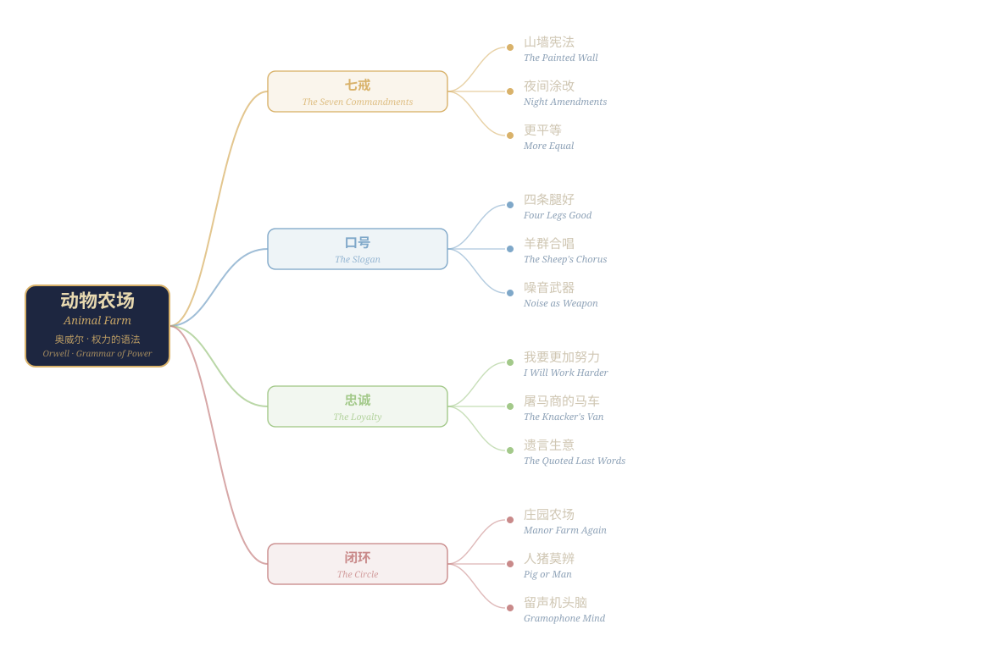

动物农场
〇 · 书籍信息
基本信息
| 书名 | 《动物农场》——人民文学出版社「蜂鸟文丛」版，正文十章＋三章附录：未刊自序《英国的出版自由》、乌克兰文版序、《动物农场》注解 |
|---|---|
| 作者 | 乔治·奥威尔（1903–1950），本名埃里克·布莱尔——生于英属印度，任过缅甸警察，参加过西班牙内战；1945 年出版《动物农场》，1948 年写完《一九八四》 |
| 译者 | 辛红娟——宁波大学外语学院教授，深耕翻译理论与实践，译笔准确克制，保留寓言的冷峻 |
| 体裁 | 政治寓言小说——1945 年战时写就，多家出版商拒稿后终于问世；被公认为二十世纪最锋利的政治童话 |
| 一句话 | 革命从「全体动物都是同志」出发，抵达「一些动物比其他动物更平等」——一面山墙记录了宪政如何被涂改至只剩一条戒律 |
一 · 核心主题总览
十章正文与三章附录之下，是四组互相咬合的母题：① 七戒与涂改（宪政的覆灭）
七条戒律用白颜料大字刷上仓棚山墙，三十码外清晰可读——随后一条条被重新解释：床铺加了被单、杀戮有了借口、饮酒有了配额。宪法的覆灭不靠废除条文，靠的是重新解释条文——山墙还在，戒律已换。
② 口号与羊群（政治传播的退化链）
七戒被斯诺鲍尔简化成「四条腿好，两条腿坏」，绵羊一唱几个小时「不知疲倦」；此后每逢有动物想抗议，绵羊的咩咩声就把抗议淹没——从复杂原则到条件反射，中间只隔一个「简化」。
③ 劳动者与忠诚（波克赛的账本）
最勤恳的马拉车马波克赛把「我要更加努力」「拿破仑同志永远正确」当座右铭，累垮后被卖给屠马商换酒钱，再被斯奎勒追认为忠诚的圣徒——献身者的终点不是墓碑，是一箱威士忌的发票。
④ 革命的闭环（人猪莫辨）
结尾猪双足直立、与人类宴饮打牌，窗外动物「从猪看到人，从人看到猪，再从猪看到人，分不清哪个是人，哪个是猪」——压迫换了主体，压迫本身未动：革命最坏的结局不是失败，是长得和敌人一模一样。
二 · 第一段 起点：梦与戒律—— 老麦哲 · 七戒 · 暴动 ——
老麦哲的谷仓演说
三岁的大种猪老麦哲在谷仓灯下召集全体动物，诊断直给：「咱们的生活悲惨、劳碌而又短暂。我们来到这个世界，食物仅能勉强果腹」「在英格兰，动物没有自由」——结论同样直给：「全体人类都是敌人。全体动物都是同志！」先知是一头即将寿终的猪：理论由死者交付，实践由生者扭曲——这个落差是整部寓言的引擎。
◆ 语言学习 · 动员 · 语法
| 敌人／同志 | 二元对立的政治语法——团结因它成为可能，清洗也因它获得许可证 |
|---|---|
| 梦 | 革命的初始叙事权——谁解释苦难、谁分配希望，谁就先握住了发言权 |
七戒：革命的第一部宪法
暴动当夜，自学了三个月的猪把动物主义浓缩成七条戒律刷上仓棚山墙——「凡两条腿走路者均为敌人」「凡四条腿走路或长翅膀者均为朋友」……末一条：「所有动物一律平等」。白颜料、大号字、众目共睹——成文法的意义在于不可篡改；而全书的故事，恰恰是七戒一条条被涂改的过程。
◆ 语言学习 · 宪政 · 山墙
| 山墙 | 宪法的公告栏——涂改发生在所有人都看得见的地方，而非暗室：公开的秘密最有效 |
|---|---|
| 朋有 | 初版七戒里「朋友」的错字——革命日就有拼写错误，伏笔了日后的一切笔误式篡改 |
格言与羊群
斯诺鲍尔把七戒简化为「四条腿好，两条腿坏」，绵羊「记住这条格言后，简直走火入魔，一躺到田里，就咩咩哼唱……一唱几个小时」。从七戒到一句口号是政治传播的经典退化链：复杂原则→简单口号→条件反射——口号后来成了噪音武器，专门淹没抗议。
◆ 语言学习 · 传播 · 退化链
| 四条腿好 | 可喊不可想的口号——喊出来比想明白快：这就是它被选中的原因 |
|---|---|
| 咩咩声 | 多数人的条件反射——几声乱嚷就能让「原本想抗议的动物只好作罢」 |
三 · 第二段 权术：风车与口号—— 驱逐 · 收编 · 取消讨论 ——
风车之争
斯诺鲍尔力主建风车发电解放动物，拿破仑纵狗将其驱逐；三个星期天后拿破仑突然宣布修建风车，且「对于为何改变主意，拿破仑不置一词」，末了高呼「风车万岁！动物农场万岁！」窃取政见比窃取政权成本更低：把流亡者的方案据为己有，再消灭方案的原主——历史上只剩「深谋远虑」。
◆ 语言学习 · 权术 · 归名
| 不置一词 | 改主意的沉默——解释权留在手中，风险留在别人身上 |
|---|---|
| 风车万岁 | 夺来的工程口号——为别人的蓝图欢呼，是权力最经济的姿态 |
拳击手的座右铭
拉车的马波克赛凡想不明白的事，最后都归于「如果拿破仑同志这么说，那就一定没错」——后来他把这句话改成「拿破仑同志永远正确！」，每每说完「我要更加努力！」都不忘记再加上这一句。「多干活」与「别多想」是两条互补的驯化公式——努力值得尊敬，但把努力嫁给不许质疑的对象，等于替别人加班。
◆ 语言学习 · 驯化 · 公式
| 我要更加努力 | 汗水逃避法——能用力气回避的问题，权力乐见你用力气回避 |
|---|---|
| 拿破仑同志永远正确 | 想象力上交法——「永远正确」四个字让一切复盘失去意义 |
被取消的讨论
斯奎勒宣布今后不再开星期天上午的集体讨论会；动物们「当然不想让琼斯回来」，波克赛替大家说出了心声：「如果拿破仑同志这么说，那就一定没错。」——讨论就此取消。公共讨论的死法通常不是被禁止，而是被「理解」：恐惧与崇拜双管齐下，连一次冲突都不需要。
◆ 语言学习 · 议事 · 关闭
| 琼斯回来 | 永久有效的要挟——用旧暴政的幽灵为新暴政保鲜：恐惧的复利 |
|---|---|
| 一定没错 | 替领导完成论证——当大家学会抢答，会址就永久地空了 |
四 · 第三段 崩塌：戒律与死者—— 更平等 · 屠马商 · 遗言生意 ——
更平等：七戒的终局
猪睡进床铺、饮酒、双足直立、与人类做买卖之后，山墙上只剩一条戒律：「所有动物一律平等，但一些动物比其他动物更平等。」从「一律平等」到「更平等」，一个转折词完成了宪政的覆灭：平等从原则降格为等级制的修辞外衣——用的还是原来那面山墙。
◆ 语言学习 · 语义 · 翻转
| 但 | 全书最贵的一个连词——七戒的全部覆灭浓缩在两个分句的接缝处 |
|---|---|
| 更平等 | 不写成法律条文，写成惯例：谁可以破例，谁的错误不算错误 |
波克赛倒了
深夏一夜，鸽子飞回报信：「波克赛倒了！侧倒在地，起不来了！」他只求退休与风车完工；数日后一辆屠马商的马车来接他「去治病」，本杰明追赶不及——三天后斯奎勒宣布他在兽医院安详去世。劳动者的一生在账本上只有一个去向：可持续榨取→报废→变卖换酒。
◆ 语言学习 · 劳动 · 账本
| 屠马商的马车 | 「去治病」的隐喻——承诺与账单同车而来：先看病，后买单 |
|---|---|
| 本杰明 | 全农场唯一没被骗过的驴——他追赶不及：清醒者的悲剧是清醒得来不及 |
遗言生意
斯奎勒含泪替波克赛杜撰临终遗言：「前进，同志们！……动物农场万岁！拿破仑同志万岁！拿破仑永远正确。」并称之为「我见过的最感人至深的一幕」。死人是最安全的宣传品：无法对质、无法纠错、只能被引用——榨取他生前的力气，再征用他死后的名义。
◆ 语言学习 · 宣传 · 引用
| 临终遗言 | 无法核实的引用体——凡是被拿来服务当下政策的「遗言」，都值得问一句出处 |
|---|---|
| 感人至深 | 催泪的功能——眼泪是最好的闸门：流泪的人不再追问卖马的钱去了哪 |
五 · 第四段 闭环与序言—— 人猪莫辨 · 知识懦弱 ——
人猪莫辨
猪搬进房舍、改名「庄园农场」、与人类农场主宴饮打牌；窗外张望的动物只见「十二种愤怒的声音，听起来完全一个样」——「窗外的动物从猪看到人，从人看到猪，再从猪看到人，分不清哪个是人，哪个是猪。」结尾是全书最有力的闭环：革命以消灭剥削者开始，以剥削者长得一模一样结束。
◆ 语言学习 · 闭环 · 面目
| 十二种声音 | 吵架的和事佬一样响亮——面目的混淆是终极的批判：连吵吵不动了 |
|---|---|
| 庄园农场 | 名字转了一圈回到原点——改名是最容易的革命，也是最彻底的复辟 |
未刊之序：知识懦弱
附录一收录了被出版社搁置的自序《英国的出版自由》：四家出版商拒稿，信息部暗示「不合时宜」；奥威尔诊断自由的最大威胁不是官方审查，而是出版界的「主动阻遏」与「知识懦弱」——「最大的敌人是留声机似的头脑，不管自己认不认同，只要有人播放就会听从。」连一部讽刺苏联的小说在英国都难以出版，足证审查不需要枪——只需要人人心照不宣的「不妥」。
◆ 语言学习 · 序言 · 病理
| 知识懦弱 | 没写完的自我批评——怕迫害是本能，怕「不合时宜」才是时代的病 |
|---|---|
| 留声机似的头脑 | 引用不核验、转发不追问、表态不思考——三个动作一个病因 |
读法与回响
建议读序：正文（一口气十章，寓言的密度极适合一次读完）→ 附录一《英国的出版自由》（读懂难产史）→ 附录二乌克兰文版序（看奥威尔把书托付给谁）→ 附录三注解（苏联史对照表）。这本书最持久的用法不是「影射谁」，而是自查：我是不是也在某个场合，做了那个替口号伴奏的绵羊、那个说「一定没错」的波克赛？
◆ 语言学习 · 自查 · 三问
| 影射 | 寓言的第一层用法——识破它之后还有第二层：把自己放进去 |
|---|---|
| 自查 | 读寓言的终章——承认自己也可能是被寓言写中的那种人 |
六 · 人物图鉴与成长弧线—— 主角配角 · 一张表看穿 ——
主要人物
拿破仑——一头伯克夏种猪——革命后以豢养的狗驱逐斯诺鲍尔，成为农场的绝对主宰
斯奎勒——口才出众的猪——宣传总管，一切涂改的执笔人：能证明「两加二等于五」
波克赛——拉车的马——「我要更加努力」「拿破仑同志永远正确」的全农场劳模
次要人物（功能位）
| 老麦哲 | 先知猪——谷仓演说奠定了整套革命理论，死在暴动之前 |
|---|---|
| 斯诺鲍尔 | 风车设计者——被驱逐后成为一切失败的背锅侠 |
| 本杰明 | 驴子——全农场唯一看穿一切却只做旁观者的清醒者 |
| 羊群 | 格言的合唱团——咩咩声是权力最廉价也最有效的背景音 |
| 克拉弗 | 母马——波克赛的同伴，善良而不设防 |
七 · 主题与象征—— 每个道具都在说话 ——
| 山墙七戒 | 宪法公告栏——从七条到一条的涂改史 |
|---|---|
| 风车 | 现代化的执念——三次建毁，功劳与账单永远分家 |
| 狗 | 拿破仑的私兵——幼犬被秘密豢养，暴力的复利 |
| 牛奶与苹果 | 特权的第一口——「科学证明猪需要它们」，特权的配方 |
| 屠马商的马车 | 承诺与账单——「去治病」的最后一程 |
| 留声机 | 序言中的头脑——播放别人的声音，不产生自己的声音 |
八 · 写作手法赏析—— 怎么写，就能怎么学 ——
① 童话体寓言
动物角色让政治批判获得免检通行——童话的外壳，病历的内芯。
② 重复句的变质
「我要更加努力」「四条腿好」反复出现，每次出现语境都更黑暗——重复即褪色。
③ 克制叙事
波克赛被卖、克拉弗目送，叙述者不评论——只让本杰明嘶喊一声。
④ 序言互文
正文写暴力如何改写历史，附录一写舆论如何改写出版——内外互证。
九 · 名段欣赏—— 原文精读 · 逐段赏析 ——
十 · 金句摘录—— 12 条 · 中英对照 · 带出处 ——
"全体人类都是敌人。全体动物都是同志！"—— 第 1 章 · 谷仓演说
"咱们的生活悲惨、劳碌而又短暂。"—— 第 1 章
"在英格兰，动物没有自由。"—— 第 1 章
"凡两条腿走路者均为敌人。"—— 第 2 章 · 七戒
"所有动物一律平等。"—— 第 2 章 · 七戒
"四条腿好，两条腿坏。"—— 第 3 章 · 格言
"我要更加努力！"—— 第 5–6 章 · 波克赛座右铭
"拿破仑同志永远正确！"—— 第 5–6 章 · 波克赛座右铭
"所有动物一律平等，但一些动物比其他动物更平等。"—— 第 10 章 · 山墙终局
"波克赛倒了！侧倒在地，起不来了！"—— 第 9 章
"窗外的动物从猪看到人，从人看到猪，再从猪看到人，分不清哪个是人，哪个是猪。"—— 第 10 章 · 结尾
"最大的敌人是留声机似的头脑，不管自己认不认同，只要有人播放就会听从。"—— 附录一 · 未刊自序
十一 · 拓展阅读—— 原文 · 词条 · 译文 ——
原文与文本
- Animal Farm — Wikipedia —— 1945 年出版背景、创作时间线与苏联隐喻对照表
- George Orwell — Wikipedia —— 缅甸警察、西班牙内战、《一九八四》的完整脉络
主题与延伸
- Freedom of the press — Wikipedia —— 附录一《英国的出版自由》的主题延伸
- Animal Farm — The British Library —— 手稿与初版史料
十二 · 个人感悟与心得—— 三点心得 ——
山墙 · 屠马商 · 留声机
① 宪法写在山墙上，更写在抗议里
七戒被涂改时无人喊疼，成文法就退化成装饰画——条文的价值不在写得多漂亮，在被触碰时有没有人喊疼：守住的不是条文，是「有人敢问为什么」的习惯。
② 永远正确的人，最先不正确
波克赛的两句座右铭一前一后：努力救不了他，「永远正确」正是卖他的理由——把努力嫁给不许质疑的对象，等于替别人加班：能被喊出来的口号，注定比能被想明白的原则传播得快。
③ 换了面孔没换处境，革命就还没完成
结尾十二种声音听起来完全一个样——检验一场变革的终极问题只有一个：底层的处境变了没有？没有，就还没走出那间灯光通明的餐厅。
—— 奥威尔死于 1950 年 1 月 21 日，伦敦，肺结核。他在《我为何写作》里说：「每当人们坐下来写一篇毫无偏袒的文章时，就会为荒谬所打倒。」
十三 · 一页速查（复习用）
| 全书骨架 | 十章正文：暴动→七戒→内斗→涂改→轮回；三章附录：自序＋乌克兰版序＋注解 |
|---|---|
| 核心命题 | 宪政的覆灭；口号的退化链；忠诚的账本；革命的闭环 |
| 必读篇目 | 正文第 1、5、9、10 章（骨架四章）→ 附录一（钥匙篇） |
| 三大符号 | 山墙七戒（宪法）· 风车（现代化执念）· 留声机（头脑） |
| 一句话总结 | 奥威尔一生都在写权力的语法——他从不预言暴政，只解剖暴政如何把话说圆 |
十四 · 全书思维导图—— 一图纵览 ——

一图纵览全书骨架 · 中英双语对照 · 手机端可左右滑动查看全图